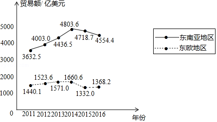
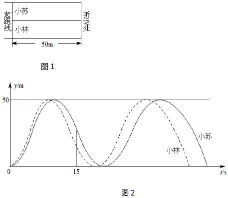
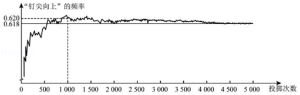

2017年北京市中考数学试题 · 选择题 第6、7、8、9、10题
6．（3分）若正多边形的一个内角是150°，则该正多边形的边数是（ ）
A．6B．12C．16D．18
7．（3分）如果a2+2a﹣1=0，那么代数式（a﹣
）•
的值是（ ）
A．﹣3B．﹣1C．1D．3
8．（3分）下面的统计图反映了我国与“一带一路”沿线部分地区的贸易情况．
2011﹣2016年我国与东南亚地区和东欧地区的贸易额统计图

（以上数据摘自《“一带一路”贸易合作大数据报告（2017）》）
根据统计图提供的信息，下列推理不合理的是（ ）
A．与2015年相比，2016年我国与东欧地区的贸易额有所增长
B．2011﹣2016年，我国与东南亚地区的贸易额逐年增长
C．2011﹣2016年，我国与东南亚地区的贸易额的平均值超过4200亿美元
D．2016年我国与东南亚地区的贸易额比我国与东欧地区的贸易额的3倍还多
9．（3分）小苏和小林在如图1所示的跑道上进行4×50米折返跑．在整个过程中，跑步者距起跑线的距离y（单位：m）与跑步时间t（单位：s）的对应关系如图2所示．下列叙述正确的是（ ）

A．两人从起跑线同时出发，同时到达终点
B．小苏跑全程的平均速度大于小林跑全程的平均速度
C．小苏前15s跑过的路程大于小林前15s跑过的路程
D．小林在跑最后100m的过程中，与小苏相遇2次
10．（3分）如图显示了用计算机模拟随机投掷一枚图钉的某次实验的结果．

下面有三个推断：
①当投掷次数是500时，计算机记录“钉尖向上”的次数是308，所以“钉尖向上”的概率是0.616；
②随着实验次数的增加，“钉尖向上”的频率总在0.618附近摆动，显示出一定的稳定性，可以估计“钉尖向上”的概率是0.618；
③若再次用计算机模拟实验，则当投掷次数为1000时，“钉尖向上”的概率一定是0.620．
其中合理的是（ ）
A．①B．②C．①②D．①③